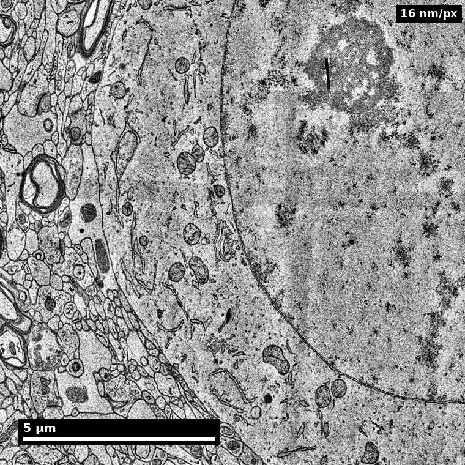

Slide 1 of 12
 NeuroTrailblazers · Deck template
NeuroTrailblazers · Deck template
Nanoscale connectomics
Membranes, neurites, and the connections between them.
Presenter name · Affiliation · Date
Human cortex · H01
Object segmentation over electron microscopy
H01 release · Lichtman Lab / Harvard & Connectomics at Google · CC BY 4.0
Shapson-Coe et al. (2024) · doi:10.1126/science.adk4858
Slide 2 of 12
How to use this deck
Start here
- Copy
neurotrailblazers-template.marp.mdand rename it. - Keep
theme: neurotrailblazersin the front matter. - Set
footer:to the unit or module name. - Render with
./scripts/render_marp.sh, which registers the theme.
One idea per slide. If you need a second heading, you need a second slide.
Slide classes available
| Class | Use for |
|---|---|
title |
Opener, once |
section |
Divider between parts |
| (none) | Standard content |
mist |
Agenda, summary, quiet slides |
figure |
Image gets the room |
stat |
One number that matters |
dark |
Emphasis content slide |
closing |
Last slide |
Slide 3 of 12
Part 1
Section divider
One sentence saying what this part settles, in the reader's terms.
Slide 4 of 12
Standard content slide
A short heading identifies the subject or states a supported finding.
- Lead with the mechanism. Say what happens, then why it matters for the learner's next decision.
- Numbers over adjectives. "About 2 PB per mm³" beats "very large".
- One callout at most. A slide with two boxes has two slides in it.
- Third-level detail belongs in the speaker notes, not on the slide.
Note callout. Use for the caveat that a careful practitioner would raise unprompted: an assumption, a version pin, a boundary of the claim.
Source: unit page or DOI-pinned citation. Every figure or number slide carries one of these.
Figure description and teaching notes
Speaker notes go here. Marp keeps HTML comments as presenter notes.
Slide 5 of 12
Two columns: text against evidence
What the learner should be able to do
- Decide whether a merge error or a split error is the more expensive fix for a given task.
- State the proofreading budget that makes a connectivity claim defensible.
- Name the null model before the metric.
What this slide does not claim
That proofreading rates transfer across datasets. They do not; calibrate per volume.

A compartment label needs evidence from the tissue.
H01 release · site render · CC BY 4.0 · Shapson-Coe et al. (2024), doi:10.1126/science.adk4858
Slide 6 of 12
Membranes and model labels

The same field, before and after classification. A model label is a hypothesis to check.
H01 release · site render · CC BY 4.0 · Shapson-Coe et al. (2024), doi:10.1126/science.adk4858
Slide 7 of 12
2,000 GB
Per cubic millimetre of imaged cortex, before any reconstruction. The infrastructure unit exists because of this number.
Source: Unit 04, Volume reconstruction infrastructure; MICrONS data release.
Slide 8 of 12
Three numbers, when one is not enough
9
technical units, each ending in a graded lab
25
session kits with worksheets, rubrics and decks
127
dictionary terms with a typical value and a common confusion
Slide 9 of 12
Tables and rubrics
| Level | Segmentation call | Evidence required |
|---|---|---|
| Not yet | Trusts the automated merge | No inspection recorded |
| Proficient | Inspects at branch points | Screenshot and coordinate per decision |
| Strong | Reports its own error rate | Blind re-check on a held-out sample |
Good callout. The behaviour that separates a practitioner from someone who followed the steps.
Warn callout. The failure that looks like success: the query runs, the number is plausible, the version was never pinned.
Slide 10 of 12
Dark content slide for the turn in the argument
Use sparingly, for the one slide where the room should sit up.
Key point. Structure is evidence of organisation and constraint, not direct proof of dynamics. The connectome bounds what the circuit can do; it does not say what it did.
# Code stays short and pinned
client = CAVEclient("minnie65_public")
syn = client.materialize.synapse_query(post_ids=[root_id],
materialization_version=1300)
Slide 11 of 12
Summary slide, quiet background
Settled in this session
- The claim, in one sentence.
- The metric, and the null it beat.
- The boundary: what this does not show.
Next
- Lab: produce the artifact and rubric-score it.
- Read: the unit's "Go deeper" links.
- Bring: one question the figure did not answer.
Slide 12 of 12
Mapping connections. Making connections.
Questions, corrections and pull requests: neurotrailblazers.org · github.com/wrgr/neurotrailblazers
Supported by the NIH BRAIN CONNECTS program. Content CC BY 4.0 unless noted.